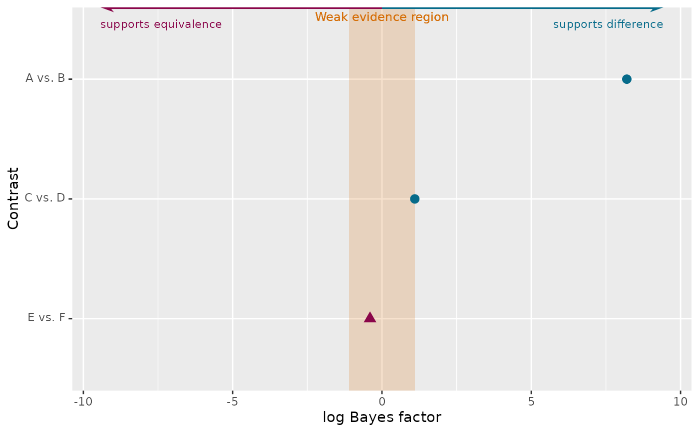

One row per contrast, point (+/- optional SE), colored by sign, with
layer_bf_evidence_scale()'s weak-evidence-region annotation bundled in
by default.
Usage
plot_bf_forest(
data,
contrast,
log_bf,
se = NULL,
pairs = NULL,
contrast_strip = " NA$",
contrast_reorder = TRUE,
positive_color = NULL,
negative_color = NULL,
positive_shape = 16,
negative_shape = 17,
point_size = 3,
evidence_scale = TRUE,
weak_threshold = log(3),
weak_label = "Weak evidence region",
direction_labels = NULL,
secondary_axis = FALSE,
secondary_breaks = c(1, 2, 5, 15, 50, 150),
xlab = NULL,
ylab = "Contrast"
)Arguments
- data
A data frame with one row per contrast.
- contrast
Unquoted column with the contrast label. If
pairsis given, this is treated as bayestestR's raw"<left> - <right>"string and run throughprepare_bf_contrasts()first; otherwise used directly as the display label, unchanged.- log_bf
Unquoted column of log Bayes Factors.
- se
Optional unquoted column of standard errors (
NULLomits the errorbar - a Bayes Factor from a singlebayesfactor_rope()call, unlike a repeated bridge-sampling estimate, has no natural per-contrast SE at all, and that's a fully supported, first-class case here, not a fallback).- pairs
Optional list of
c(left, right)pairs; seeprepare_bf_contrasts(). A pair matched in reversed order gets its sign flipped automatically (vialog_bfpassed asprepare_bf_contrasts()'svalue).- contrast_strip
Passed to
prepare_bf_contrasts()'sstripwhenpairsis given.- contrast_reorder
TRUE(default) sorts rows bylog_bf;FALSEkeepspairs' own order (ordata's own order, ifpairswasn't used).- positive_color, negative_color
Colors for positive/negative contrasts; default to
mt_colors[1]/mt_colors[2].- positive_shape, negative_shape
Point shapes for positive/negative contrasts. Color and shape both carry sign, redundantly, so direction stays legible under grayscale printing or for red/green-blind readers.
- point_size
Size of the contrast points.
- evidence_scale
TRUE(default) bundleslayer_bf_evidence_scale()in automatically, withrangecomputed fromdataitself;FALSEfor a bare forest plot with no annotation.- weak_threshold, weak_label
Passed to
layer_bf_evidence_scale()whenevidence_scale = TRUE.- direction_labels, secondary_axis, secondary_breaks
Passed through to
layer_bf_evidence_scale()whenevidence_scale = TRUE.- xlab, ylab
Axis labels.
Examples
bf_data <- data.frame(
contrast = c("A vs. B", "C vs. D", "E vs. F"),
log_bf = c(8.2, 1.1, -0.4)
)
plot_bf_forest(
bf_data,
contrast = contrast,
log_bf = log_bf,
direction_labels = c("supports difference", "supports equivalence")
)
